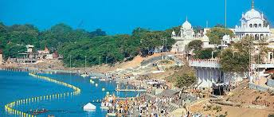

I live in city NANDED

Nanded, the city that features the beguiling blend of modern with the ancient form, is the second biggest city of Maharashtra and is also the head quarters of the district which bears the same name of the city.
It is situated in the southeast part of Maharashtra along the banks of River Godavari in the Marathwada region.
This Maharashtra city is a well known place of historical importance as it houses the popular Sikh Gurudwara and many other Sufi shrines.
The presence of Hazur Sahib, which is one among the five Takhtas of Sikhs, makes Nanded the second most holy city among the Sikhs, following Amritsar in the lead.
In spite of being a religious city, Nanded has evolved as a promising commercial sector of Maharashtra.
Most of the industries of Nanded are based on agricultural produce and others are units manufacturing steel furniture.
Gurudwara Nanded, also known as Takht Sachkhand Shri Hazur Abchalnagar Sahib, is a significant Sikh place of worship located in Nanded, Maharashtra, India.
It is one of the five Panj Takhts, the most important seats of authority in Sikhism.
The gurudwara was built between 1832 and 1837 by Maharaja Ranjit Singh on the site where Guru Gobind Singh, the tenth Sikh Guru, passed away.
The temple gets its name Kaleshwara Mukteswara Swamy mandiram because of the duel presence of Lord Shiva or the Mukteshwara and the other is the Lord Yama or Kaleshwar.
It is also believed that the Kaleshwara Mukteswara Swamy temple is one of the three temples of Lord Shiva of Trilinga Desham.
Famous dish of Maharashtra is Puran Poli
It is the special dish of Maharashtra which is prepared on every occasion at every house, especially during festivals such as Gudhi Padwa, Akshaya Tritiya, Ganesh Chaturthi and Holi.
It is eaten with Basundi, Aamras, Kadhi, Amti, etc.
In Maharashtra, Puran Poli is eaten with a variant of Amti (flavored sour curry) known as Katachi Amti which is prepared with the remaining water of cooked Chana Dal used to make Puran Poli.
Mainly jaggery is used in puran poli for sweetness.
It is eaten with Vada (Bhaji) a pakora made of all lentils.
In some regions of Maharashtra, Puran Poli is served with a dollop of ghee on top, which enhances its flavor and richness.
The texture and taste of Puran Poli can vary from region to region, with some areas making it thinner and crispier, while others make it thicker and softer.